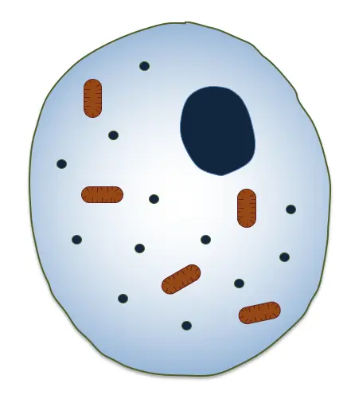
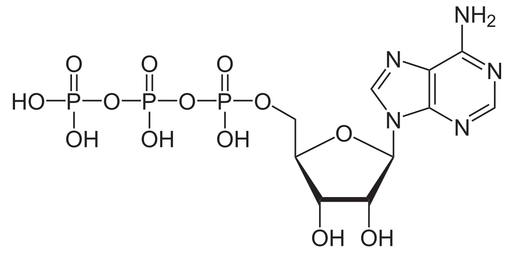
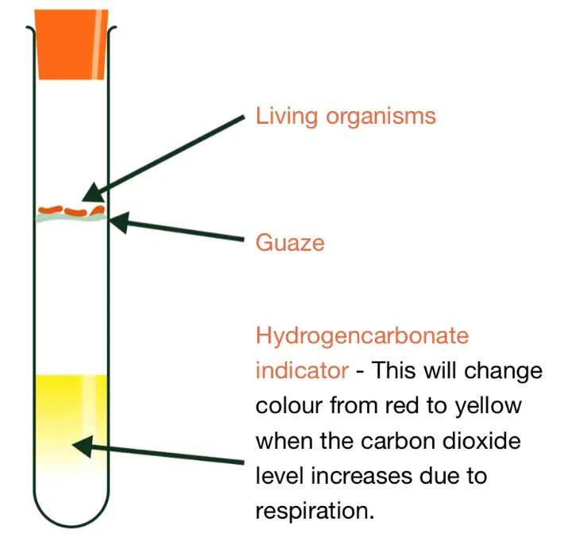

What you need to know (specification)
- 2.34understand how the process of respiration produces ATP in living organisms
- 2.35know that ATP provides energy for cells
- 2.36describe the differences between aerobic and anaerobic respiration
- 2.37know the word equation and the balanced chemical symbol equation for aerobic respiration in living organisms
- 2.38know the word equation for anaerobic respiration in plants and in animals
- 2.39practical: investigate the evolution of carbon dioxide and heat from respiring seeds or other suitable living organisms
What is respiration? 2.342.35
Being alive requires energy: for movement, reproduction, staying warm, hunting, excretion and growth. Organisms get this energy from a process in their cells called respiration.
- Every cell needs energy to carry out its many functions (metabolic reactions).
- The cell gets this energy from a molecule called ATP.
- ATP is made by respiration, which happens all the time in every cell.


Cells carry out two types of respiration: aerobic (with oxygen) and anaerobic (without oxygen).
Respiration is a chemical reaction inside every living cell that releases energy from glucose to produce ATP. Cells use ATP to power muscle contraction, active transport, cell division, and keeping warm.
- NEVER say respiration "makes" or "produces" energy — energy cannot be created! Always write: respiration releases energy (and produces ATP).
- Respiration is NOT breathing! Breathing (ventilation) moves air in and out of the lungs; respiration is a chemical reaction inside every living cell.
Quick check
0 / 2 doneAerobic respiration 2.37
Remember 6, 6, 6: 6O₂, 6CO₂, 6H₂O … just remember the number of the devil! It is photosynthesis backwards.
Aerobic respiration releases lots of energy as ATP. It happens in the mitochondria.
Animal cell
Plant cell
- Write the reactants and products: C6H12O6 + O2 → CO2 + H2O.
- Balance C (6 CO2), then H (6 H2O), then O (6 O2) → C6H12O6 + 6O2 → 6CO2 + 6H2O (remember the "6-6-6" pattern!).
Now you try: write the word equation for aerobic respiration and state which organelle it occurs in.
Quick check
0 / 2 doneAnaerobic respiration 2.362.38
In muscles
When the blood cannot bring oxygen to the muscles fast enough, they respire anaerobically:
Anaerobic respiration is not very efficient: aerobic respiration produces about 16–19 times more ATP per glucose molecule (around 32–38 ATP vs just 2 ATP).
In plants (and fungi such as yeast)
For example, in roots in waterlogged soil. In yeast this is called fermentation: humans use yeast for brewing and baking (more on this in topic 5).


Aerobic or anaerobic?
| Aerobic | Anaerobic | |
|---|---|---|
| Oxygen | Uses oxygen | No oxygen |
| Where | Mitochondria | Cytoplasm |
| Energy released | A lot of energy (ATP) | Only a little energy |
| Products | Carbon dioxide and water | Lactic acid (animals) or ethanol and carbon dioxide (plants, yeast) |
Quick check
0 / 2 donePractical: carbon dioxide and heat from respiration 2.39 practical Double Award only
Carbon dioxide: living organisms (germinating seeds, or woodlice — treat them nicely!) are held on gauze above hydrogencarbonate indicator. As they respire, carbon dioxide builds up and the indicator turns from red to yellow.
Compare germinating seeds with the same mass of boiled seeds. Control all other variables so the experiment is valid.

Heat: germinating seeds and boiled seeds are put in vacuum (thermos) flasks with a thermometer. The germinating seeds respire, so the temperature rises. The boiled seeds are dead and don’t respire, so their temperature does not change.

Quick check
0 / 2 donePractice
True or false?
Show mark scheme
Quick check
0 / 2 doneEnd-of-topic test
Test yourself without looking back! Answer the multiple-choice questions, write your own long answers, then check the mark schemes.